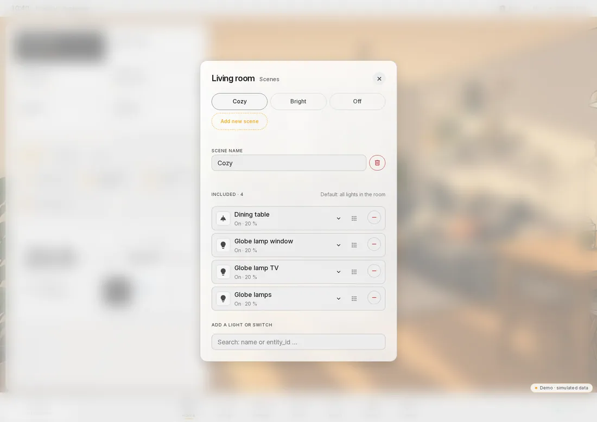
Scenes, configured where they live.
A long press on a scene chip opens its editor. Every change runs on the lights straight away as a preview and is taken back when the editor closes — the room is never left in an editing state.
Hauser is a self-hosted, room-first Home Assistant frontend for the people who live in the home. Home Assistant remains the operator and admin interface; Hauser is the calm everyday dashboard for wall panels, tablets and phones.
Technical beta · self-hosted · AGPL code and docs · Svelte 5
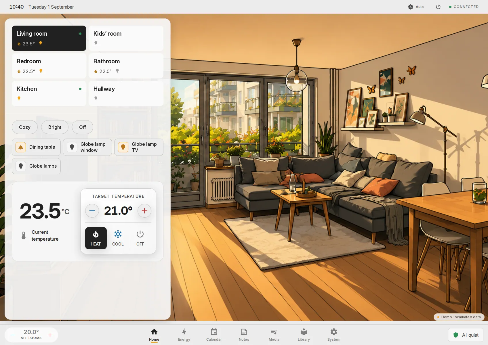
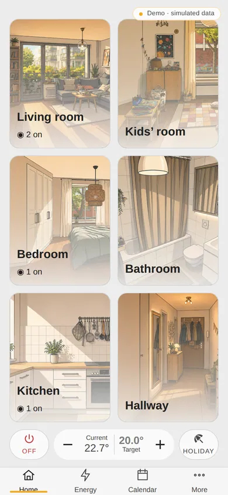
The room comes first. Controls stay to the side, where they belong — and the phone gets the same rooms, one-handed.
Live demo
The real interface runs in your browser against simulated devices — no Home Assistant, no account, no private household data behind it. Every screenshot on this page was taken from it.
What's new
The beta moves fast, and most of what moved is on screen: a scene editor, a real room list, a live layout drawer, one thermostat for the whole house, a settings surface that reads like a product. Scroll through the strip — every card is a real capture from the demo build.

A long press on a scene chip opens its editor. Every change runs on the lights straight away as a preview and is taken back when the editor closes — the room is never left in an editing state.
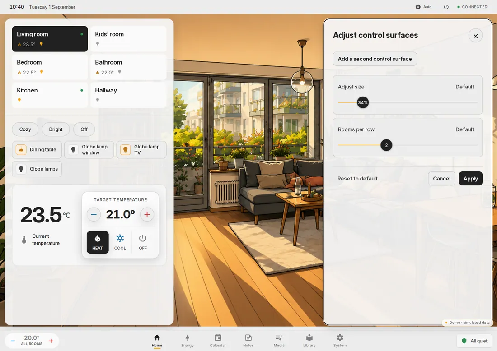
A long press on the room background opens an unblurred panel with the same dimensions as a control surface. Width and room tiles per row are continuous controls with a direct preview.
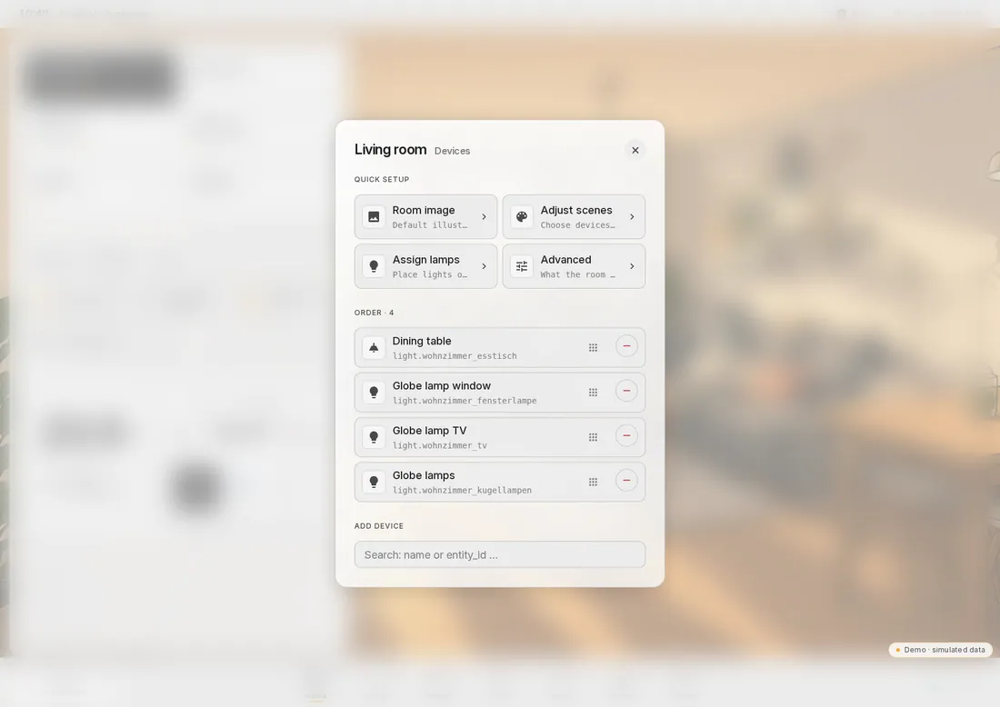
Room image, scenes, lamp placement and the advanced view sit as a quick-setup grid. Reordering is a six-dot handle that drags, with the arrow keys as the keyboard path.
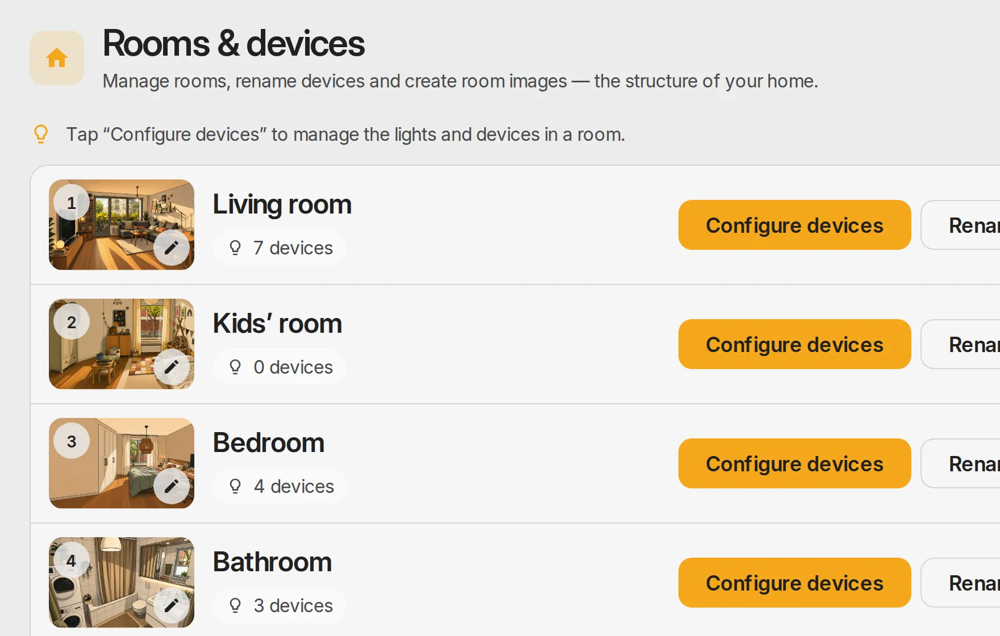
Every room shows its current image, its name and how many devices it holds. Tapping the thumbnail opens the image editor; Rename edits in place; the handle drags the room into position.
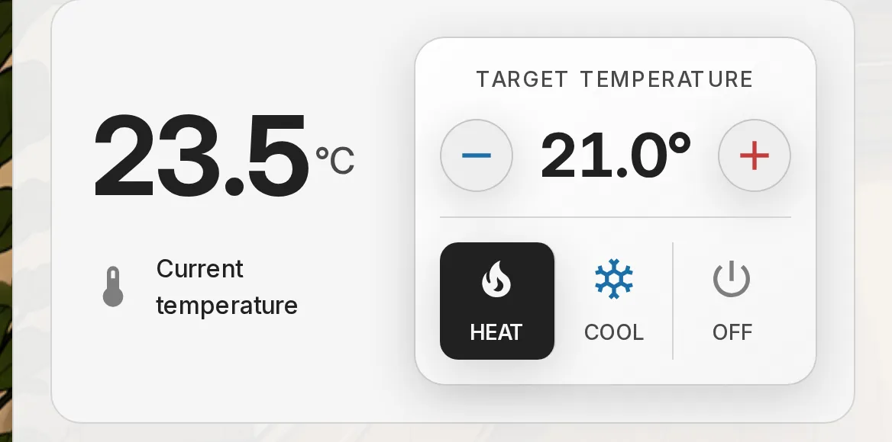
Each room keeps its own card. The All rooms pill in the status bar and the phone's quick actions show the shared target and raise or lower every configured climate entity together. Steps are plus and minus, everywhere.
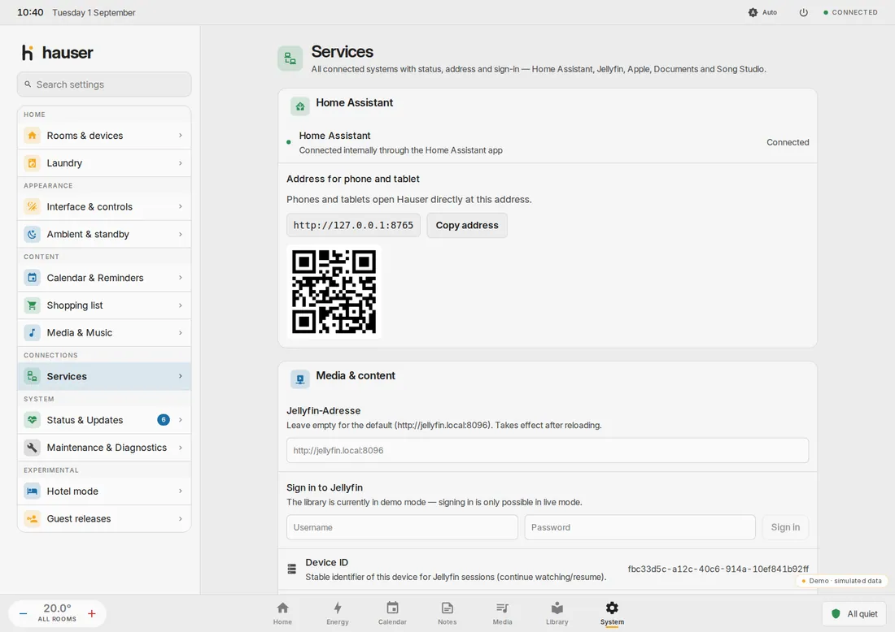
As a Home Assistant App there is no address and no token to type. The wizard's last step shows the URL the household will use, with a copy action and a QR code — and it stays under System → Services.
Cologne, here. The place comes from Home Assistant, from the device's own location or from a place search under Ambient & standby. The map is rendered once on the server as a small monochrome image; what leaves the server is a search term, never your address.
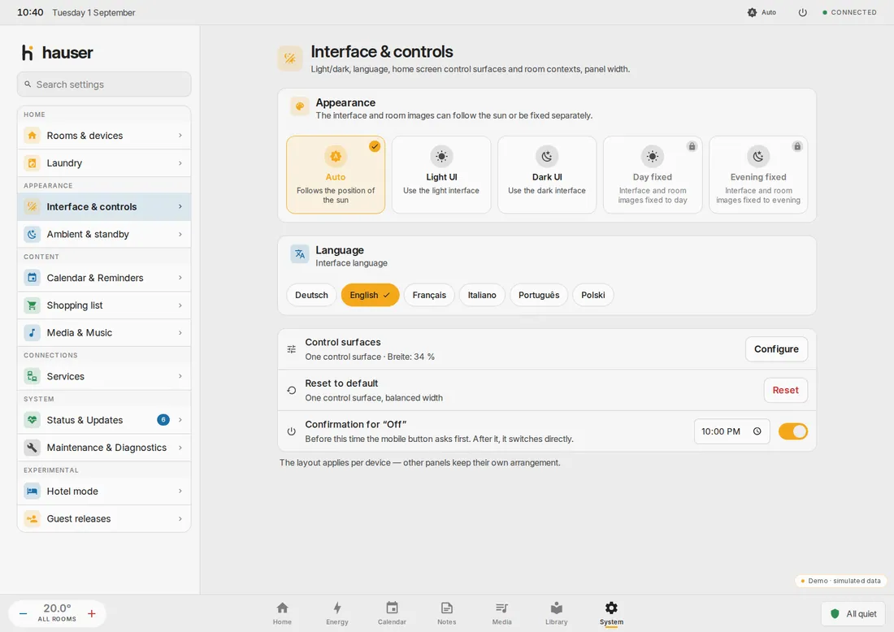
Auto follows the sun; the interface and the room images can also be fixed separately. Hotel Mode and guest access moved into an Experimental group at the end of the list, where experiments belong.
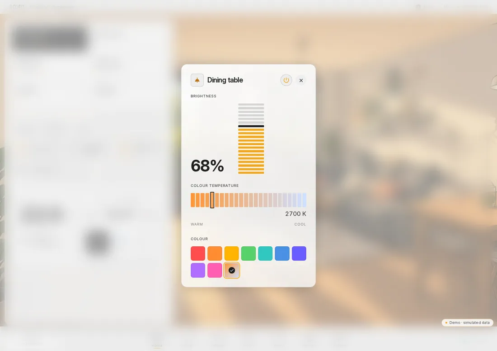
Brightness as a bar you drag, colour temperature as a warm-to-cool strip, colour as swatches. Only what the lamp actually supports is shown; a plain switch gets none of it.
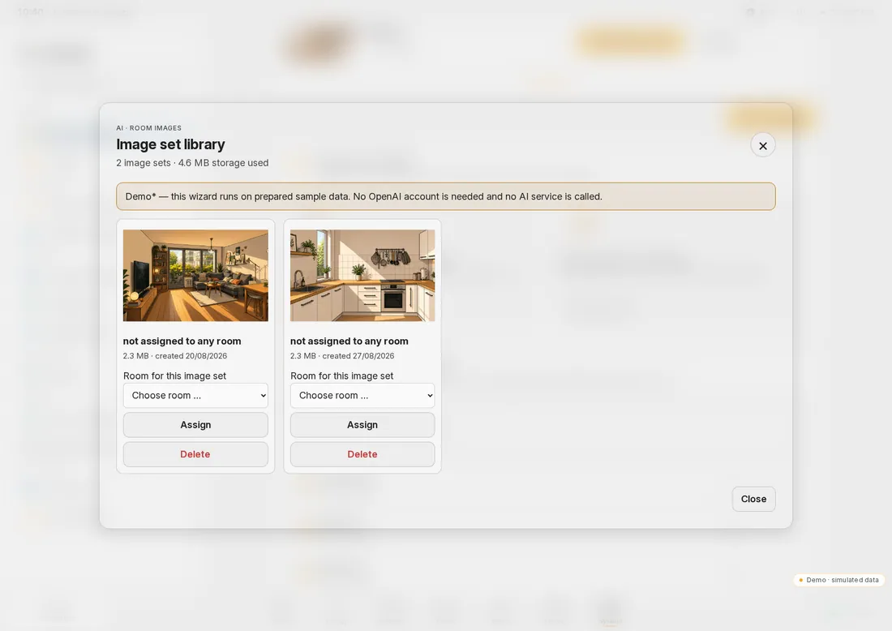
Every image set with a preview, its size, its date and the room it is assigned to. Assign it, remove the assignment, or delete it after a confirmation. The header keeps count of the storage used.
Why this exists
Home Assistant is an excellent home automation engine. Its dashboard is a grid you fill with cards, each written by a different person, each with its own spacing, motion, and idea of what a button feels like. It works — and it never quite feels like one product.
Hauser takes the other path. Everything on screen comes from a single set of design tokens, a documented interaction contract, and a performance budget that is treated as a requirement rather than an aspiration.
Interaction model
There is no edit mode and no gear icon in the corner. A tap does the everyday thing — turns the lamp on, applies the scene, selects the room. A long press on the same spot opens the editor for exactly that thing. Try it below: pick a spot, or press a marker.
Five captures from the same demo build. The long press fires after 400 ms; moving more than 10 px cancels it, so a scroll never opens an editor.
Room UI
The default panel keeps one narrow control surface beside the room illustration. More space is available when needed, but it is not the first impression and it is not the everyday default.
The interface follows the sun through Home Assistant, so nobody in the household ever reaches for a theme setting. Both pictures below are real screenshots of the same panel in the same state — switch between them.

The same panel, the same room, the same lamps — only the sun moved.
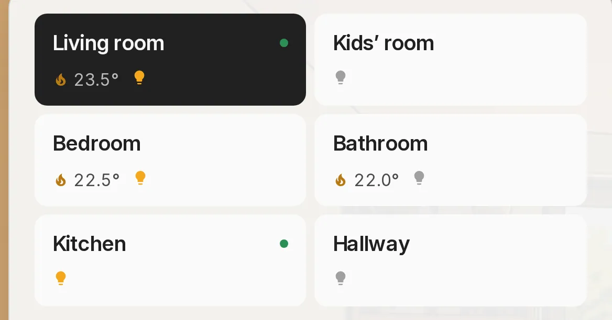
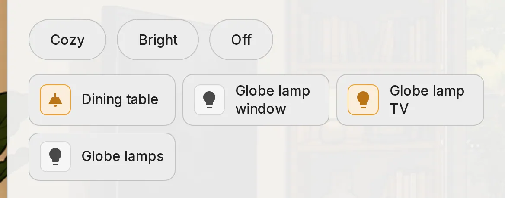
Room images
Every room in Hauser carries an illustration of itself in three lighting states, and the picture follows the lights. The illustrations that ship with the product are of this house, which is no use to yours — so the room-image wizard makes yours from a photograph you take with your phone.
The picture on the left is a real input, not a demonstration shot. Evening light, a wide-angle phone lens, toys on the floor, the sofa half in shadow. Nothing was tidied and nothing was staged. The illustration on the right is what the pipeline made of it — and it is the living-room image that ships in the product today.

Input Even this photo is enough.

Output The same room, in the daylight state.
Upload the picture, choose the crop and set the focus point that the room screen will hold on to. A few closed options — calm the clutter a little or a lot, keep this thing in particular — instead of a prompt box.
The first pass may correct perspective and composition moderately. After that, camera, geometry and object positions are frozen, and only the style is applied — so what comes back is still your room, not a stock living room that resembles it.
Day, evening and lights-off are generated as one set, reviewed together and published atomically to the image library. Assign it to a room from there, or keep the bundled illustration.
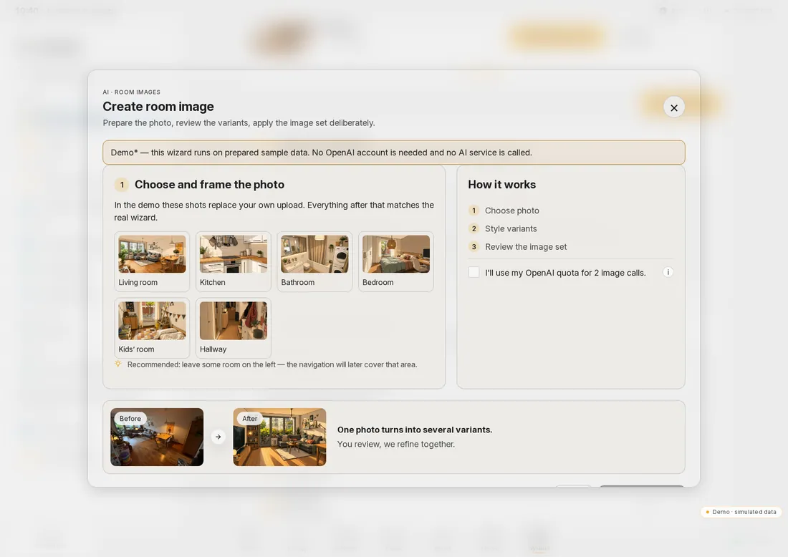
The wizard leads with the photograph. Access and consent appear only when they are missing.
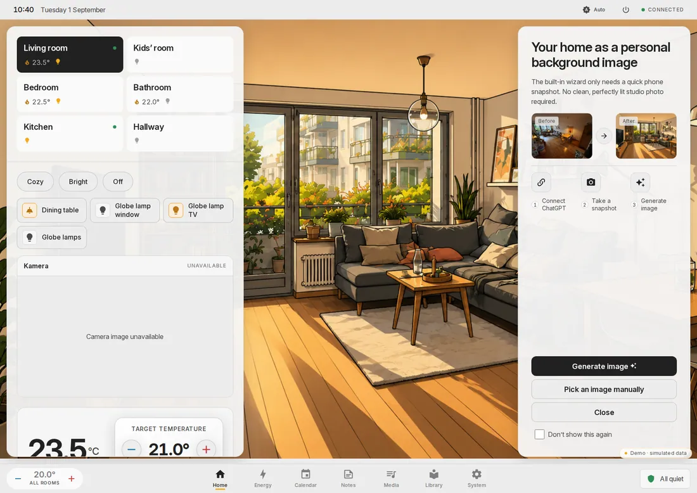
A room without an image explains how to get one — and can be told to stop, for good, on this device.
This is the one place where Hauser talks to a paid third party: the wizard needs your own OpenAI access, and your photo is sent there to be redrawn. That trade is stated before anything is uploaded, every paid step is confirmed by hand, and a running count of provider calls stays on screen. The public demo runs the wizard on prepared sample photographs instead.
Interaction
Tap a light and it turns on — on screen, immediately. The command travels to Home Assistant afterwards. When the house confirms, nothing visible happens, because the interface was already right.
The usual way tap · wait for the backend · redraw
Hauser tap · redraw · tell the backend
When the house disagrees, the control animates back to the true state instead of quietly lying to you. Every intent is tracked, reconciled against the incoming state, and abandoned after a timeout. That reconciliation logic took longer than anything else in this project, and it is the reason the interface feels the way it does.
Settings
Rooms, appearance, content, connections, system — and a search box, because nobody remembers where the confirmation for "Off" lives. Settings open on Rooms & devices, the page where a home is actually set up, and unfinished room edits survive a detour to another section.
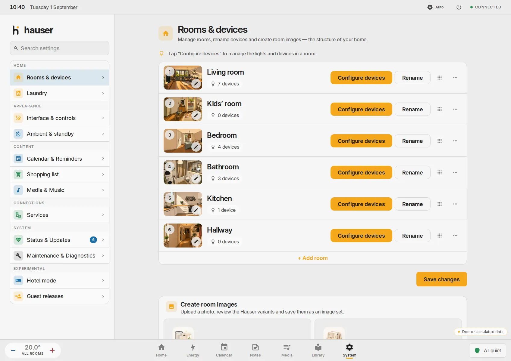
One navigation, six groups. Experimental things are labelled experimental and sit at the end.
Everyday
Lights and rooms are what a home dashboard gets sold on. What a household actually touches every day is smaller than that: who still has to do what, and what is missing from the fridge. Those two got the same care as the room screens — and they are the reason people who never open Home Assistant open this.

Shopping list grouped by shop, reminders as post-its per person.
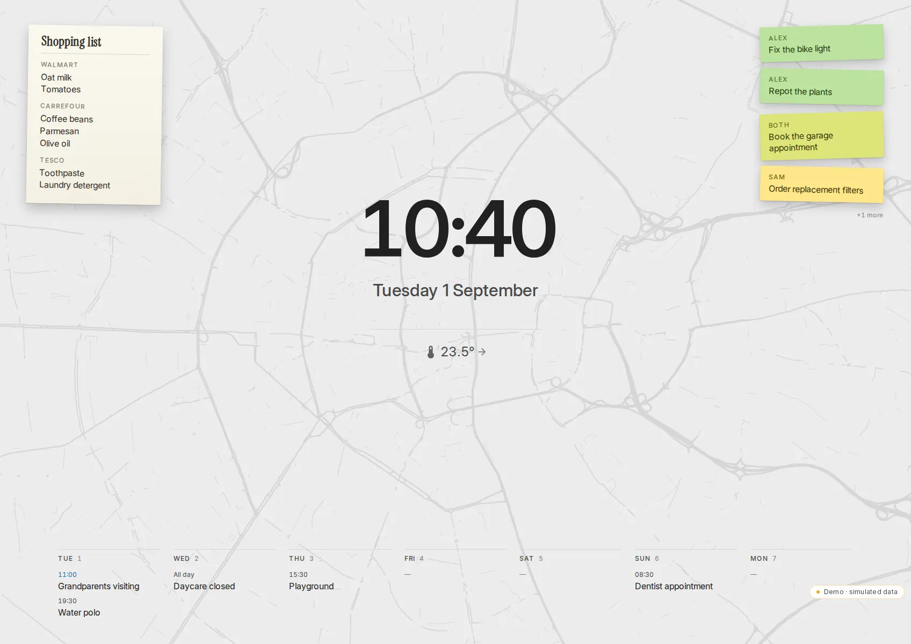
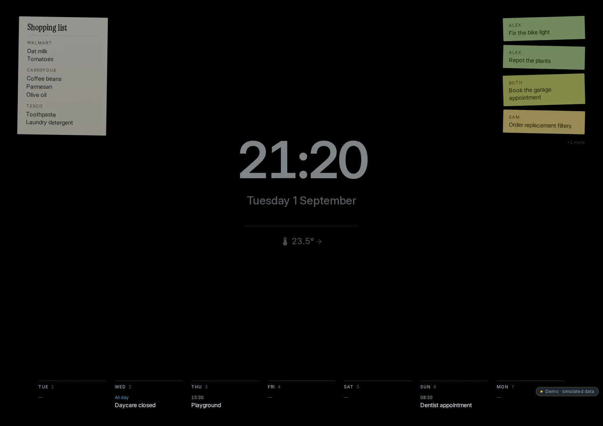
The same lists on the resting screen, over a faint map of your own town — touch a list and you are in it. After 22:00 only the time remains, in dimmed red.
Reminders are post-its grouped by family member, each in their own colour. Adding one is a tap beside that person's name — no form, no separate assignment step, nothing to explain to anyone.
On the phone the list stays grouped by shop, so it reads in the order you walk. Checking an item off takes a double tap — deliberate enough that a pocket cannot do it, and done items stay visible for a while, so a wrong one is never a loss.
The ambient screen carries the week's appointments, the post-its and the shopping list without anyone unlocking anything. Touch the list and you land in the list; touch the week and you land in the calendar.
Calendar
Calendars come from Home Assistant — every calendar.*
entity you select, read through its own WebSocket command, so iCloud,
CalDAV and Google land in the same grid. Multi-day events run as bars,
today is marked, and the settings page can start Home Assistant's own
iCloud config flow without leaving the panel.
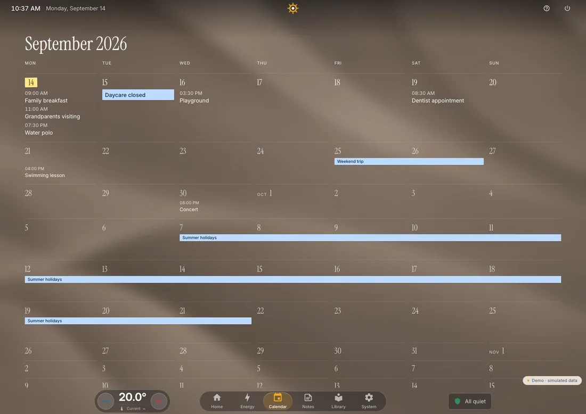
Energy
Live load and daily consumption come from real power sensors, broken down per device and plotted across the day. The house behind this screenshot has no solar array and no grid meter, so those figures stay empty rather than being estimated into existence. An interface that invents numbers is worse than one that admits a gap.

Media
Jellyfin is integrated rather than embedded: the shelves, the detail view and HLS playback with resume are built in the same design system as the light switches. Room audio runs through Home Assistant media players with the same controls — choosing what plays in the kitchen is no different from turning on the kitchen light.

Two shells
The phone layout is not a squeezed panel. Navigation moves to the thumb, rooms become a drill-down instead of an overlay, and the destinations you use most sit in the bottom bar in an order you choose. The tokens, motion and interaction rules stay identical — and since 0.6.1 a room card shows its picture in the first paint, at a fifth of the panel's file size.
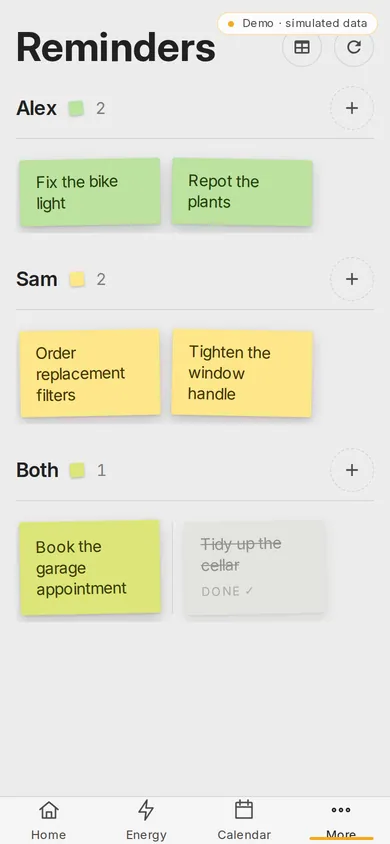
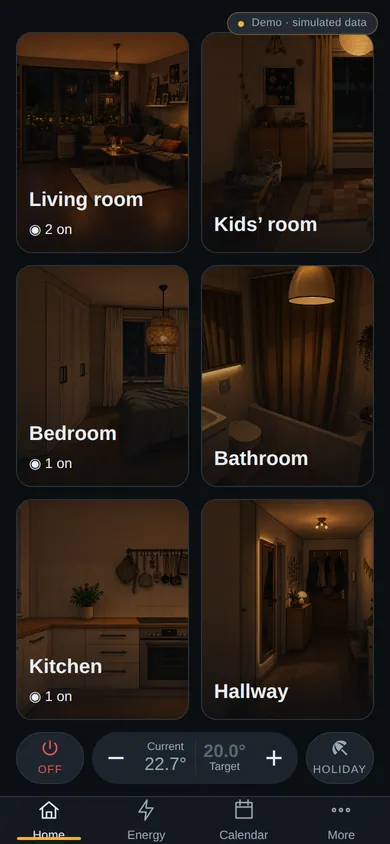
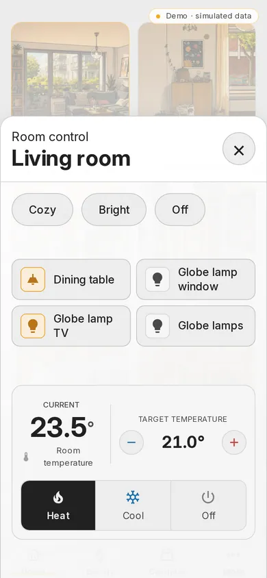
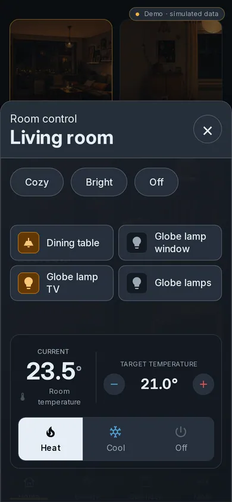
Reminders, the home feed and a room sheet. The quick-action row carries the shared thermostat, all-off and holiday mode.
Beta status
Hauser installs and runs today. Compatibility with the enormous range of Home Assistant setups is still growing, there is no support SLA, and it is built for trusted deployments on your own network rather than for the public internet.
The first installation outside this household is confirmed: Hauser was set up on an Asustor NAS running Linux on x86_64 with Docker Compose against Home Assistant Container — roughly eight areas and 370 entities, discovered automatically, with the first light under control ten minutes in. That report also found the current edge: media players, vacuums and some room-assigned switches were not picked up by discovery yet. Both halves of that are what a beta is for.
The full picture — supported entity domains, known limitations and what changed in each release — lives in the release notes and the README.
Install
Both paths end in the same guided setup: it scans Home Assistant, proposes rooms and devices, lets you correct the result and activates a validated configuration atomically. No source edits, no YAML.
Home Assistant OS & Supervised
github.com/ralleur/hauser as an App repository.No address and no token to type: the App talks to Home Assistant over the Supervisor, the token stays inside the server process, and App backups cover your household configuration. Setup ends with the address your phones use, as text and as a QR code.
Container, Docker hosts, NAS
.env.example to .env.docker compose up -d.Home Assistant Container has no App system, so this is the path there — and the one the first external installation confirmed. Backup, restore, update and rollback are documented end to end.